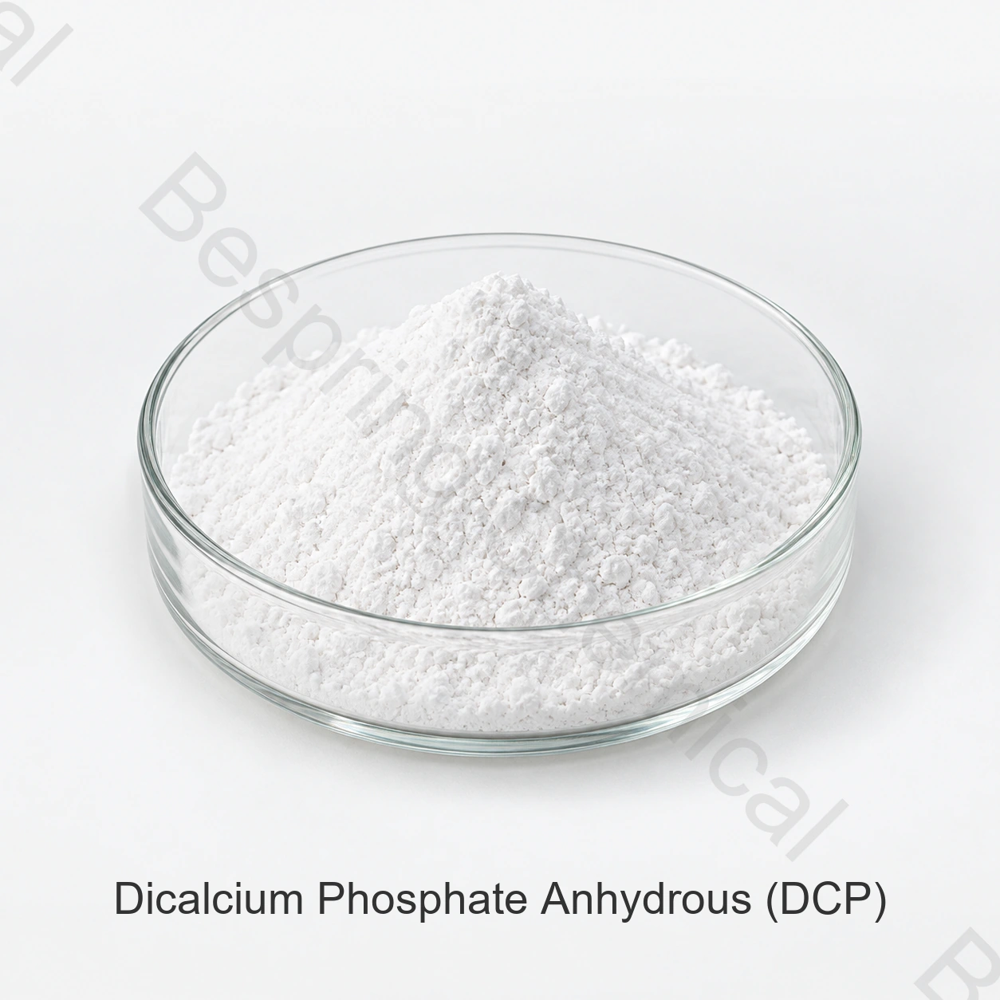
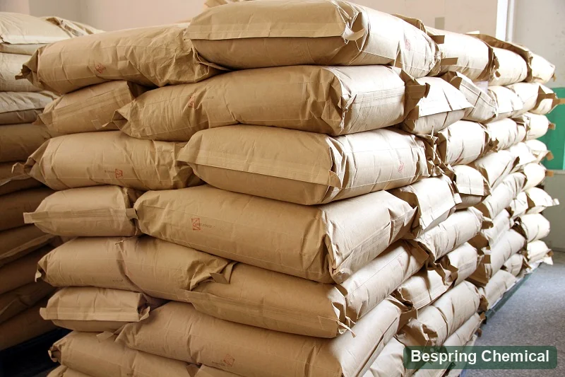
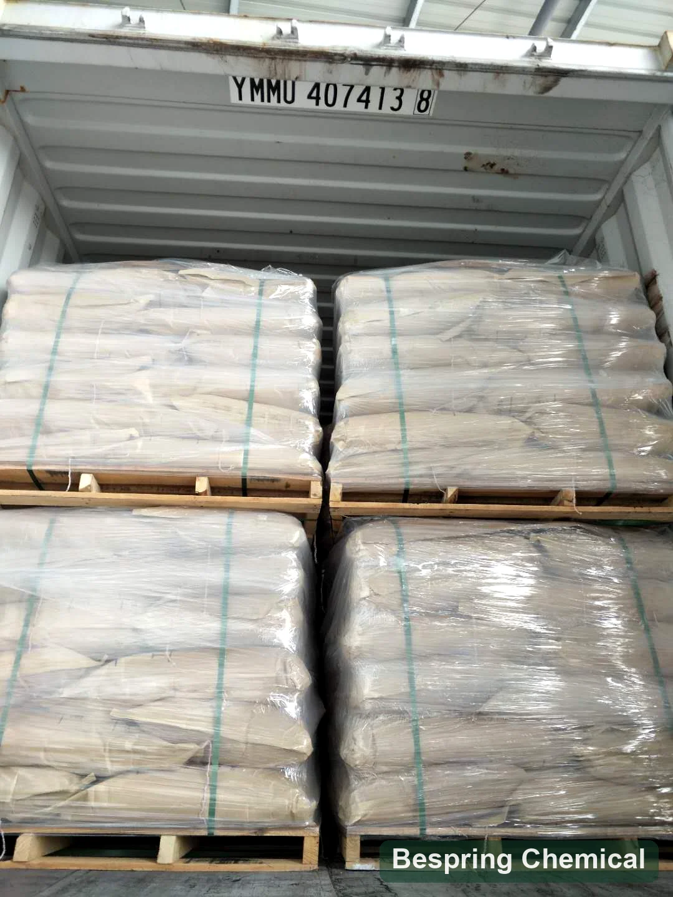

二水磷酸氫鈣（DCP）
含兩分子結晶水的磷酸氫鈣，分子式為 CaHPO4·2H2O,CAS 編號為7789-77-7。
- 分子量：約172.09
- JECFA 乾燥失重：200°C時18–22%3小時
- 檢視二水磷酸氫鈣專屬頁面
食品原料 · 磷酸鈣 · E341(ii)
食品級無水磷酸氫鈣（DCP，CAS 7757-93-9）可依麵糰調理、酵母營養及鈣磷配方評估。確認採購的是無水或二水形態，並核對含量基準、粒徑及檢驗方法。

產品示意圖 · 產品等級與包裝依報價方案說明
包括相關提案所需的形式、標準、數量、目的地和食品應用。
來源證書請求確切產品和地點的現行範圍
請在詢價時提供採購量、包裝、棧板及交貨地點；裝運與供貨條件依雙方確認的報價。
請在詢價時提供採購量、包裝、棧板及交貨地點；裝運與供貨條件依雙方確認的報價。
批次文件現行規格和COA可根據要求提供
產品概述
食品級無水磷酸氫鈣是磷酸氫鈣，CaHPO4, CAS 7757-93-9 和 INS/E341(ii ) 。JECFA還使用同義詞二鹼性磷酸鈣和磷酸氫鈣。
微溶於水，不含結晶水。粒徑，含量測定基礎，乾燥失重，雜質限值和目的地市場的要求因此比簡稱“DCP 磷酸氫鈣”本身更有用的採購變數.
明確水合物形態
此網址涵蓋無水CaHPO4。二水合物 CaHPO4·2H2O有不同的分子式、分子量、CAS編號和水損失特性。
不含結晶水的磷酸氫鈣，分子式為 CaHPO4 常用的CAS 編號為7757-93-9。
含兩分子結晶水的磷酸氫鈣，分子式為 CaHPO4·2H2O,CAS 編號為7789-77-7。
食品加工功能
實際使用水平和允許的食品類別取決於配方和目的地市場。在商業使用前完成技術試驗和監管審查。
JECFA將麵糰調理劑列為功能性用途。驗證麵粉系統、粒徑、加工順序和合法使用條件。
JECFA也列出酵母食品。確認完整的營養系統和允許的應用，而不是假定普遍效果。
根據商定的分析基礎評估鈣和磷的貢獻，然後確認成品食品宣告和當地授權。
評估完整粉末混合物的粒度分佈、堆積密度、流動性、偏析和相容性。
技術資訊
以下為商業參考規格。訂單驗收應依商定的水合形式、檢測方法、限值及批次 COA。
可橫向滑動或使用鍵盤查看完整表格
| 檢測專案 | 單位 | 參考規格 |
|---|---|---|
| 磷酸氫鈣（CaHPO4)含量，無水基 | % | 98.0–102.0 |
| P2O5 含量 | % | 50.0–52.5 |
| 砷(As) | % | ≤ 0.0003 |
| 氟化物(F) | % | ≤ 0.005 |
| 重金屬(以Pb計) | % | ≤ 0.0015 |
| 不溶於鹽酸 | % | ≤ 0.05 |
| 灼燒失重 | 依擬供規格確認限值、溫度、時間與檢驗基準。 | |
| 鉛(Pb) | % | ≤ 0.0005 |
| 鎘(Cd) | % | ≤ 0.0001 |
| 汞(Hg) | % | ≤ 0.0001 |
規格說明： 磷含量以 P₂O₅ 列示；採購時須明確檢測對象及報告基準。本商業表格中的灼燒失重與JECFA乾燥失重不可互換。最終驗收必須使用批准的來源規格、定義的方法和批次COA。
該 糧農組織/世衛組織JECFA磷酸氫鈣專論 標識CAS 7757-93-9,INS 341(ii ) , CaHPO4、乾燥後含量98–102%、微溶於水，以及麵糰調理劑／酵母營養劑的功能。 美國FDA雙鹼性磷酸鈣記錄 獨立列出CAS 7757-93-9和公認的技術效應。這些參考資料支援身份上下文;它們並不認證百泉化工的批次或授權每個食品應用。
無水DCP認證
使用準確的水合物形態和分析方法作為比較基線。
指定無水CaHPO4, CAS 7757-93-9 和 INS/E341(ii ) ; 不接受不合格的“DCP 磷酸氫鈣”描述。
確認乾燥條件，以及含量、P2O5、鈣及水分相關指標是以原樣還是乾燥後基準報告。
匹配粉末或顆粒形式，粒度分佈，堆積密度和流動性給料，混合和分離風險。
根據指定的測試方法調整氟化物、砷、鉛、鎘、汞和其他目的地特定限值。
核實預期類別、使用級別、技術功能和標籤符合製造和目的地市場的規定。
請求現行簽署的規格、SDS、代表和批次 COA,以及確切來源和期間有效的證書。
本頁介紹食品添加劑與食品原料的資格核定。動物日糧原料採購請參閱 飼料級DCP頁面養分保證、汙染物、物種規則和文件必須單獨評估。
儲存和搬運
採購常見問題
JECFA 列出的功能為麵糰調理劑及酵母營養劑。作為鈣磷原料使用時，應另行評估配方、營養標示與市場要求；本頁無水 DCP 不應直接視為其他膨鬆酸的替代品。
不涵蓋。本頁介紹食品級無水 CaHPO4, CAS 7757-93-9.二水合CaHPO4·2H2O，CAS 7789-77-7，有獨立產品頁面，應單獨報價。
不是。磷酸氫鈣(DCP ) 、 磷酸二氫鈣(MCP)和磷酸三鈣(TCP)是不同的磷酸鈣鹽。它們的鈣磷比、酸度、溶解度和食品功能各不相同。
請在詢價時提供採購量、包裝、棧板及交貨地點；裝運與供貨條件依雙方確認的報價。
請求現行簽署的規格、SDS、代表和批次COA,以及適用的食品安全、品質、原產地、過敏原、猶太教、清真或其他證書。確認每份文件都涵蓋了準確的產品、製造地點和所需期間;可用性是具體貨源的。
提供水合物形態、所需規格或標準、粒徑要求、數量、包裝、目的地國家或港口、預期食品應用和交貨日期。


開始採購對話
共享決定產品選擇和到岸成本的技術和物流詳細資訊。我們的團隊隨後可以提供相關文件和商業建議。
請提供產品等級和目的地市場，以便確認適用於該訂單的資料。
外部參考資料不等於批次分析證書或百泉產品規格書。